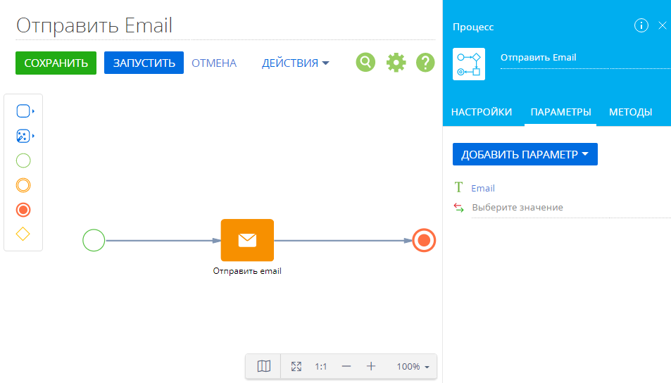
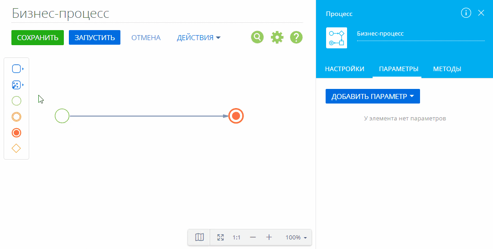
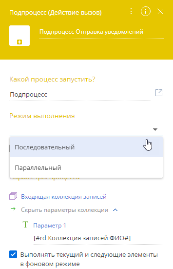

У элементов Читать данные, Вызвать веб-сервис и Подпроцесс могут быть исходящие параметры типа “Коллекция”. Чтобы иметь возможность работать с элементами коллекции (отдельными записями одной коллекции), ее необходимо обработать.
Есть несколько способов обработки коллекции при помощи элементов бизнес-процесса:
-
Коллекцию записей можно передать в другой параметр типа “коллекция”, например, в элемент Вызвать веб-сервис, для которого задан параметр вызова с типом “коллекция”.
-
С помощью элемента Задание-сценарий можно использовать сценарий для преобразования коллекций записей в отдельные записи, которые можно передать в другие элементы процесса.
-
Для отображения коллекции записей используется элемент Преднастроенная страница. Например, с его помощью можно отобразить список счетов или оценки прогресса сотрудников. Чтобы создать коллекцию на преднастроенной странице, в разделе Конфигурация добавьте параметр “Сериализуемый список составных значений”. Далее средствами разработки необходимо настроить нужную бизнес-логику.
-
Коллекции можно использовать в элементе Выполнить действие процесса. Например, вы можете массово обновить контакты. Чтобы создать коллекцию для выполнения действия процесса, нажмите
 . Откроется дизайнер пользовательских действий. Добавьте параметр “Сериализуемый список составных значений”. Далее средствами разработки необходимо настроить нужную бизнес-логику.
. Откроется дизайнер пользовательских действий. Добавьте параметр “Сериализуемый список составных значений”. Далее средствами разработки необходимо настроить нужную бизнес-логику. -
Элемент Подпроцесс позволяет по каждой из записей коллекции запускать отдельный экземпляр подпроцесса. Если любой из входящих параметров элемента Подпроцесс передается в коллекцию данных, то для каждой записи коллекции автоматически запустится отдельный экземпляр подпроцесса.
Использовать подпроцесс для обработки параметров коллекции
Подпроцесс является предпочтительным методом работы с коллекциями, поскольку он не ограничен возможностями стороннего веб-сервиса как, например, элемент Вызвать веб-сервис и при этом не требует использования кода как элементы Задание-сценарий, Преднастроенная страница и Выполнить действие процесса.
Общая последовательность обработки коллекции с помощью элемента Подпроцесс:
- Подготовьте процесс, который будет обрабатывать экземпляры коллекции данных (он будет использоваться как подпроцесс).
- В родительский процесс добавьте элемент Подпроцесс и в настройках элемента укажите подпроцесс, созданный на предыдущем шаге.
- Сопоставьте входящие и двунаправленные параметры элемента Подпроцесс с параметрами коллекции.
Подготовить процесс, который будет обрабатывать отдельные экземпляры коллекции
Создайте новый или отредактируйте существующий процесс, который будет работать с экземпляром коллекции как с отдельной записью. Например, для отправки email-сообщения контактам из списка (коллекции) подготовьте процесс, который будет отправлять письмо отдельному контакту (Рис. 1).
Рис. 1 — Базовый подпроцесс для отправки email

Входящие параметры подпроцесса должны соответствовать встроенным параметрам коллекции. Например, для отправки email-сообщения нужен адрес электронной почты контакта. Это означает, что коллекция данных должна содержать колонку Email, а процесс отправки письма должен содержать соответствующий входящий параметр Email, значение которого будет передаваться в элемент Отправить email.
 (для редактирования существующего подпроцесса) в поле
(для редактирования существующего подпроцесса) в поле Настроить элемент [Подпроцесс]
Добавьте элемент Подпроцесс на диаграмму процесса, из которого необходимо получить параметр коллекции. В поле Какой процесс запустить панели настроек элемента выберите процесс, который будет обрабатывать экземпляры коллекции, и настройте получение входящих параметров выбранного процесса (Рис. 2):
Рис. 2 — Передача параметров коллекции данных

В результате элемент Подпроцесс поэлементно обработает всю коллекцию данных. Многоэкземплярный подпроцесс запускает отдельные экземпляры подпроцесса для каждого из элементов коллекции данных, используя значения параметров.
Многоэкземплярный подпроцесс может выполняться в следующих режимах (Рис. 3):
Рис. 3 — Выбор режима выполнения многоэкземплярного подпроцесса

-
Последовательный. Экземпляры подпроцесса запускаются последовательно. Новый экземпляр подпроцесса стартует после выполнения предыдущего экземпляра. Этот режим установлен по умолчанию.
-
Параллельный. Экземпляры элемента Подпроцесс запускаются одновременно. Новые экземпляры не ждут завершения уже стартовавших. Экземпляры подпроцесса не обязательно будут завершаться в том же порядке, в котором они были запущены.
После выполнения последнего экземпляра подпроцесса элемент Подпроцесс актуализирует значения своих исходящих и двунаправленных параметров из соответствующих параметров выполненного экземпляра и активирует свои исходящие потоки.
Это означает, что после обработки коллекции данных элемент Подпроцесс может вернуть новую коллекцию, основанную на данных входящей коллекции. Например, для подпроцесса отправки уведомлений коллекции контактов можно выполнить настройку таким образом, чтобы в результате получать коллекцию результатов отправки и/или ошибок.
При параллельном режиме выполнения подпроцессов исходящие параметры добавляются в результирующую коллекцию сразу по завершении соответствующего экземпляра подпроцесса. Таким образом, порядок добавления элементов в результирующую коллекцию непредсказуем. Например, экземпляр процесса, сопоставленный с первым элементом входящей коллекции данных, может завершиться последним.